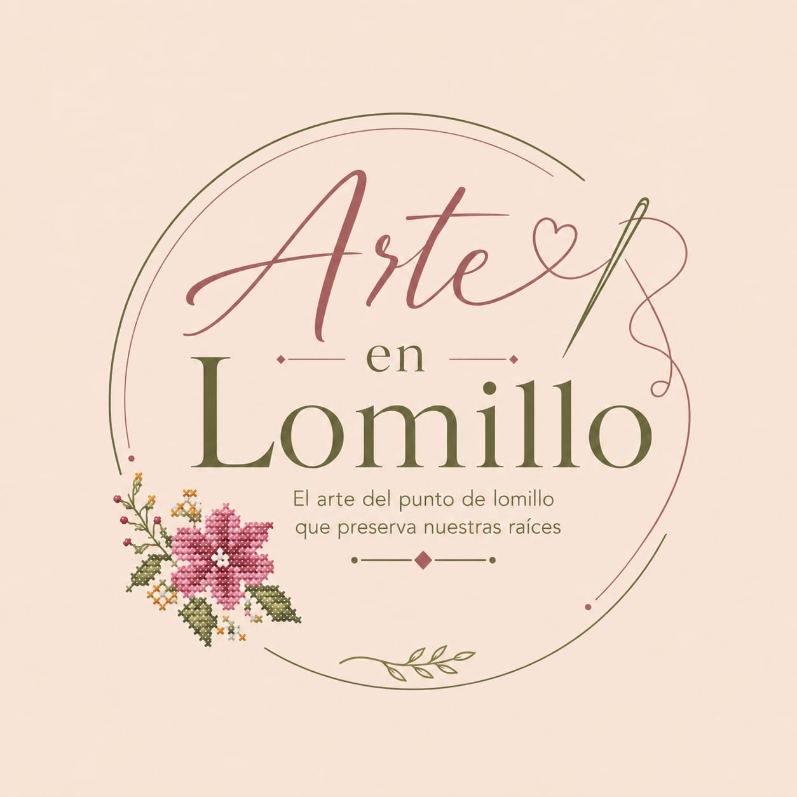

Bordado artesanal · Nacajuca, Tabasco
El arte del punto de lomillo que preserva nuestras raíces
Cada pieza es bordada a mano con la técnica tradicional de punto de lomillo, hilo por hilo, para llevar contigo un pedazo de nuestra cultura.

Nuestra historia
Tradición que se hila con paciencia
El punto de lomillo es una técnica de bordado tradicional originaria de Yucatán, caracterizada por su puntada contada y su belleza geométrica y floral. En Nacajuca, Tabasco, se retoma esta tradición para crear piezas únicas: tiras bordadas, blusas y faldas que llevan el alma de nuestras artesanas.
Cada pieza requiere tiempo, dedicación y amor. Así nace cada bordado: hecho a mano, hecho con orgullo.
Catálogo
Piezas hechas a mano, por pedido
Cada pieza es única. Escríbenos por WhatsApp para conocer disponibilidad, tiempos de entrega y opciones a la medida.
Es muy sencillo
Cómo pedir tu pieza
-
Elige tu pieza
Explora el catálogo y encuentra la tira, blusa o falda que más te guste.
-
Cuéntanos los detalles
Talla, cantidad o cualquier preferencia especial para tu pedido.
-
Confirma por WhatsApp
Te enviamos los detalles y tiempos de entrega para tu pedido.
¿Lista para tener tu pieza bordada a mano?
Elige tu pieza en el catálogo y pídela directo por WhatsApp — en minutos te atendemos.